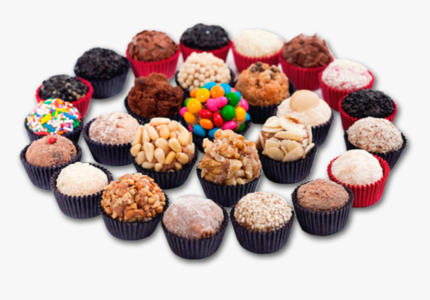

propostas da doceria
Brigaderias – melhores “brigadeiros gourmet”, que levam ingredientes mais sofisticados. Por serem especializados, sempre inovamos em sabores, formas e embalagens diferenciadas.
Brownerias – Especializadas em brownies, produzem opções diferenciadas, com embalagens estilosas, em potes, além de agregarem novos ingredientes em seus recheios. Muitos empreendedores iniciam comercializando o produto em cafés, padarias e confeitarias antes de abrirem uma loja especializada.
Lojas de bolos artesanais – Os bolos produzidos nessas lojas podem ter características artesanais e decoração simples. A variedade e qualidade dos produtos são os principais apelos aos consumidores, especialmente aqueles que não sabem ou não têm tempo de fazer a receita.
Lojas de doces finos e trufas – Utilizam receitas mais tradicionais, mas adotam diferenciais na decoração e embalagens. Os produtos geralmente são consumidos em eventos como casamentos e formaturas e outras ocasiões especiais.